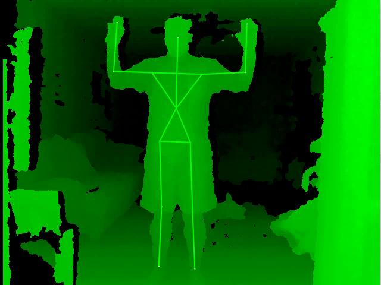

Created by Ben Farrell / @bfarrellforever
About Me
- Creative Developer
- I like UI, Apps, Interactive Experiences, Games
- I like trying new things whether mobile, desktop, or whatever
- Server side is fine, but I like the funny graphics moving around
In the 80's...
...We were pretty lazy
But then something fabulous happened
- TV had been a sit-down medium since the 1950's
- The obesity crisis was just kicking off
- We blamed TV and junk food
- Parents rationed TV time
The 80's fitness craze begins!
- An Inactive medium is transformed
- Stock in neon leg warmers go through the roof
Instead of sitting on the couch, Richard Simmons and friends got us to clear a space on our living room floor and do some cardio. It changed the way we watched TV for the better
Meanwhile, Here's Mario!
A brand new medium takes off
We learned nothing
Gamers are inactive as ever...
Or are they?
Nintendo Power Pad Circa 1986
Dance Dance Revolution
Japan Release 1998
Game Controllers got funny looking
In reality, we were just displacing buttons
Nintendo Kicked it Up a Notch
WiiMote (multi-type input)
- Accelerometer
- Infrared Optical Sensor
- Buttons and directional pad
- Wireless connectivity via bluetooth
And so did Sony...
Eye and EyeToy for Playstation
Computer Vision
|
4 Microphone Array
|
Improving on the EyeToy
Playstation Move
|

|
Enter Microsoft
Kinect
- 640x480 RGB Camera
- 640x480 IR Depth Finding Camera
- Multi-Array Microphone (4)
Is this presentation Sweatin' to the Console?
No, it's
Kinect for Windows SDK
Break free of the Console
- SDK supports application development in C#
- Bindings for Flash/Javascript with KinectJS (http://kinect.childnodes.com/)
- Official kit costs $250
- Not so official kit costs < $100
Poor Man's Kinect Hacking
XBOX Kinect
- XBOX Kinect + $10 USB splitter for Power Supply
- Windows SDK works great!
- Not legal for commercial use
- No "near mode"
Windows only?
But I'm a Web Developer
Open Source to the Rescue!

- Open source library for 3D sensing
- Cross platform
- Works with Kinect (Windows only)
- Works with Other cameras (x-platform)
Other Cameras
Asus Xtion (Pro Live) | Primesense Carmine
- From $119-$200
- Smaller than Kinect
- No Motor
- No extra power supply needed (USB)
- Less (or no) microphones
Not So Open Source to the Rescue!
Middleware sits on top of OpenNI and provides skeletal tracking, user detection, and a few gestures
What does these cameras do?
Lets look at a normal RGB camera
(edge detection will typically be used for object recognition)
What does these cameras do?
Now a RGB+D Camera
What does these cameras do?
Rendering a point cloud

Volumetric Pixels or Voxels
Infrared Beams
Seeing in the Dark
Skeletal Tracking
Interpreting the Depth Stream

OpenNI/NiTE Library is C++
Dude, seriously, I'm a Web Developer
I know, I know - you'd probably rather be stuck with C# on Windows....but wait....
My Gift to You
I made an addon!
NOW will you Sweat to the Web with me? https://github.com/bengfarrell/nuimotion
Skeletal Tracking
var nuimotion = require("nuimotion");
nuimotion.startSkeletonListener( [
nuimotion.Joints.LEFT_HAND,
nuimotion.Joints.RIGHT_HAND ],
onSkeletonUpdate /* , 50 (the default) */ );
Skeleton Object Returned:
skeleton: {
jointname: {
x: {number}, y: {number}, z: {number},
xRotation: {angle}, yRotation: {angle}, zRotation: {angle},
positionConfidence: {number},
percentExtended: {percentage},
active: {boolean}
}
}
Event Listening
nuimotion.addListener( [
nuimotion.Events.USER_IS_OUT_OF_SCENE,
nuimotion.Events.USER_IS_VISIBLE,
nuimotion.Events.SKELETON_TRACKING,
nuimotion.Events.SKELETON_STOPPED_TRACKING ],
onEvent );
Gesture Detection
nuimotion.addGesture( [
nuimotion.Events.Gestures.Swipe.types.up,
nuimotion.Events.Gestures.Swipe.types.down,
nuimotion.Events.Gestures.Swipe.types.left,
nuimotion.Events.Gestures.Swipe.types.right,
nuimotion.Events.Gestures.Wave.types.hand],
onEvent);
Why Do Gestures and Skeleton Tracking?
- It's COOL!
- Social Interfaces in a Physical Space
- Hygenic (unlike touchscreens)
- Vandalism Proof
Uses
- 10 foot interfaces
- Innovative games
- Interacting with public spaces
- Real world analytics
Case Study: Shopperception
http://www.shopperception.com/Try not to Replicate the GUI

by Daniel Wigdor and Dennis Wixon
The Power Glove Dilemma
Sales
- Released 1989
- 100,000 units sold
- $88M in sales
- Widely regarded as failure
- 2 Powerglove games were made (they could be played with standard controller)
- No UX innovation on other games - just an akward controller
Why Bother?
Kinesis.io
- Kinect based tools/framework for web page interaction
- Cursor, clicking, scrolling, etc
- Nice blend of HTML/CSS/Javascript support
Why Bother?
Natural User Interfaces should afford us new types of interaction, not be a wrapper for our existing ones
The NUI
Natural User Interfaces should be intuitive
- NUIs can include gestures, motion, and speech
- 2D Gestures are on your mobile devices (pinch/zoom/flip)
- Speech with Siri and Android
The GUI
We know how to use it because we've learned
Are We Killing the GUI?
NO!!!
- CLIs are alive and well decades after the GUI
- The mouse and keyboard show no sign of going away
- New User Interfaces are additive - not replacements
- New User Interfaces expand interfaces to new users and scenarios
NUI Rules
from Kinect for Windows Human Interface Guidelines
- For games use the "Game Mindset"
In games people enjoy being challenged and don't mind looking silly. They are eager to learn and improve
-
For applications use the "UI Mindset"
Application users have no tolerance for challenges or looking silly. Don't introduce a learning curve. Make your app immediately functional
http://www.microsoft.com/en-us/kinectforwindows/develop/learn.aspx
Visual Feedback
from Kinect for Windows Human Interface Guidelines
- How many people can it see?
- Am I in view?
- How much of me can it see?
- When and where can I gesture?
Gesture Guidlines
from Kinect for Windows Human Interface Guidelines
- Body movements that don't relate to a task are harder to remember
- Don't swipe up to scroll left
- If swipe left to scroll left, make sure you swipe right to scroll right
- Keep cognitive load low. Users can typically remember about 6 gestures
- Children generally make more erratic and quicker movements than adults
Gesture Guidlines
My Guidelines
- Create a good balance between intuitive and intentional
- Visualize gesture progress for users
- My plugin (NuiMotion) gives progress steps for gestures
Swipe Left Example
- Start Gesture by Raising right hand above waist, but below head, and not too close to body (check that hand is above elbow)
- Gesture is in progress as hand goes from right to left
- Cancel gesture if hand dips below waist or above head
- Cancel gesture if too slow or fast
{
gestureType: "SWIPE_LEFT",
hand: "left_hand",
step: "GESTURE_COMPLETE"
}
I got your back with some constants...
nuimotion.Events.Gestures.Progress =
{ start: "GESTURE_START",
complete: "GESTURE_COMPLETE",
cancelled: "GESTURE_CANCELLED" };
nuimotion.Events.Gestures.Swipe.SWIPE = "SWIPE_GESTURE";
nuimotion.Events.Gestures.Swipe.types =
{left: "SWIPE_LEFT",
right: "SWIPE_RIGHT",
up: "SWIPE_UP",
down: "SWIPE_DOWN"};
nuimotion.Events.Gestures.Wave.WAVE = "WAVE_GESTURE";
nuimotion.Events.Gestures.Wave.types =
{hand: "WAVE_HAND"};
One last note...
Speech Interaction
- The Kinect SDK provides full support
- Our solution does not :(
- But wait! We're on the web!
Web Speech API in Chrome 25
Completely in the Browser, no Node needed
- Captures your voice
- Sends a stream of data to Google's servers
- Sends back interim results and final results
- Permission is required, SSL is the only way to give permanent permission
Try it yourself!
Go forth and Sweat to the Web
- Websockets are the most obvious way to use web tech
- Make a desktop application with App.js or Node Webkit
- OpenNI projects a $15b 3D sensing industry by 2018
- Tiny Primensense Carmine sensors are being sold in bulk to device manufacturers
- Covii expects a huge 3D sensing market in 3 years time
- Lets keep it within our reach!